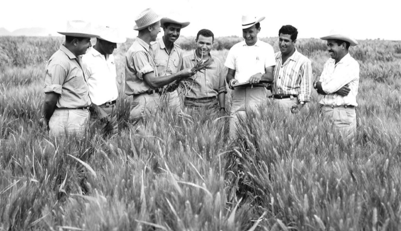

Dr.Norman Borlaug, thrid from the left, trains biologists in Mexico on how to increase wheat yields
- par of his life-long war on hunger.
Here's a time line of Dr.Norman Borlaug's life:
1914 - Born in Cresco, Iowa
1933 - Leaves his family's farm to attend the University of Minnesota, thanks to a
Depression era program know as the "National Youth Administration
1935 - Has to stop school and save up more money. Works in the Civilian Conservation
Corps, helping starving Americans. "I saw how food changed them", he said. "All of this left scars on
me."
1937 - Finishes university and takes a job in the US Forestry Service
1938 - Marries wife of 69 years Margret Gibson. Gets laid off due to budget cuts.
Inspired by Elvin Charles Stakman, he returns to school study under Stakman, who teaches him about
breeding pest-resistent plants.
1941 - Tries to ebroll in the military after the Pearl Harbor attack, but is rejected.
Instead, the military asked his lab to work on waterproof glue, DDT to control malaria, disinfectants,
and other applied science.
1942 - Receives a Ph.D in Genetics and Plant Pathology
1944 - Rejects a 100% salary increase from Dupont, leaves behind his pregnant wife, and
flies to Mexico head a new plant pathology program. Over the next 16 years, his team breeds 6,000
different strains of disease resistent wheat - including different varieties for each climate on Earth.
1945 - Discovers a way to grown wheat twice each season, doubling wheat yields
1953 - crosses a short, sturdy dwarf breed of wheat with high-yielding American bredd,
creating a strain that responds well to fertilizer, It goes on to provide 95% of Mexico's wheat.
1962 - Visits Delhi and brings his high-yielding strains of wheat to the Indian
subcontinent in time to help mitigate mass starvation due to a rapidly expanding population
1970 - Receive the Nobel Of Piece Prize
1983 - Helps seven African countries dramatically increase their maize and sorghum
yields
1984 - Become a distinguished professor at Texas A&M University
2005 - States "we will have to double the world food suply by 2050." Argues that
geneticaly modified crop are the only way we can meet the demande, as we run out of aravle land. Says
that the GM crios are not inherently dangerous because "we've been geneticaly modifying plants and
animals for a long time. Long before we called it science, people were selecting the best breeds."
2009 - Dies at the age of 95.
"Borlaug's life and achievement are testimony to the far-reaching contribution that one
man's towering intellect, persistence and scientific vision can make to a human peace and progress."
-- Indian Prime Minister Manmohan Singh
I f you have time, you should read more about this incredible human being on his Wikipedia Entry.